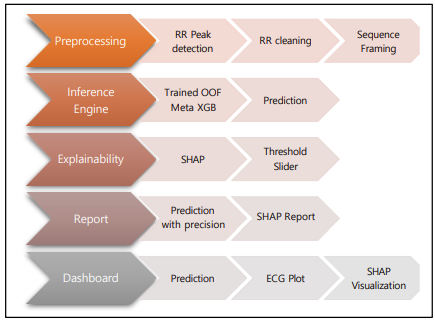
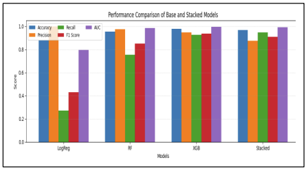
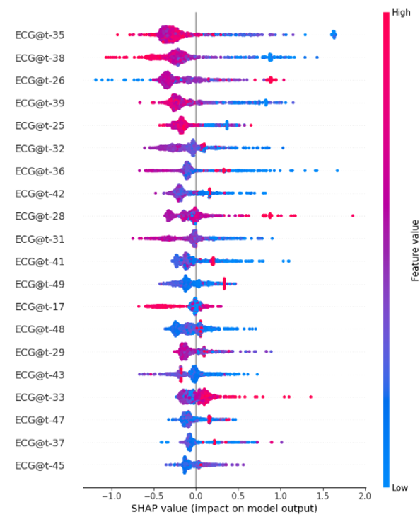
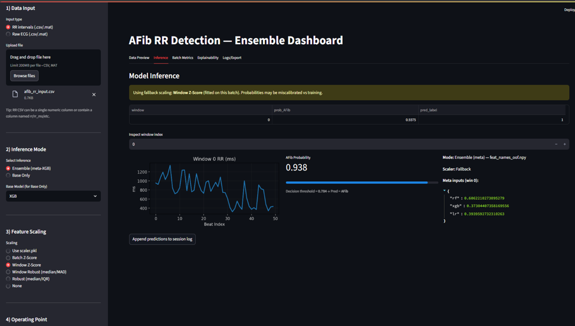

RESEARCH · IEEE ICCE-ASIA 2025
Deployable and Explainable Stacked Ensemble for Atrial Fibrillation Detection in Wearable Systems
A first-author study of atrial-fibrillation classification from RR-interval sequences, with a Streamlit dashboard prototype for inference and technical explanations.
Paper overview
The paper studies atrial-fibrillation classification using fixed-length sequences of 50 RR intervals extracted from ECG. It describes a stacked ensemble with Random Forest and XGBoost base learners and an XGBoost meta-learner. The work also presents a Streamlit dashboard for file-based inference, threshold selection, RR-interval plots, and SHAP views.
The intended contribution is a compact, explainable engineering approach to AF classification from RR timing features. It does not use the full ECG waveform morphology, and its results should be read as research evaluation rather than clinical validation.
Authors: Sweetha Malar Robert, Karimov Islom Normurod Ugli, and Shin KyooJae.
Method
- Pan–Tompkins processing is used to detect R peaks and derive RR intervals.
- Each input represents a 50-beat RR history. The paper describes handling intervals outside 300–2,000 ms and padding shorter sequences.
- Random Forest and XGBoost produce base probabilities. An XGBoost meta-learner combines out-of-fold predictions with the RR sequence as passthrough features; the paper describes stratified five-fold out-of-fold training.
- SHAP is used to inspect influential RR time steps and model contributions. These are technical feature explanations, not clinical interpretations.
Reported evaluation
On the paper’s CinC 2017 evaluation, it reports 96.8% accuracy and 94.8% recall for the stacked model. The paper reports 97.9% accuracy and 0.996 AUC for the standalone XGBoost model. These are dataset-specific results; the paper’s comparison table lists the stacked model’s AUC as 0.970.
The paper also describes testing dashboard inference on RR chunks from the Iridia dataset, which it identifies as unlabeled. That demonstrates use of the interface on another data source, but does not establish labeled external validation or generalization performance.
The manuscript reports a model size of approximately 0.36 MB and sub-second inference on commodity hardware. It does not establish clinical readiness or deployment in a wearable product.
Figures from the paper
Selected figures below show the proposed pipeline, reported model comparison, SHAP time-step analysis, and dashboard interface.

This diagram follows the system from ECG input through R-peak detection, RR cleaning, and fixed-length sequence framing. It then shows the stacked XGBoost inference step, SHAP and threshold controls, and the report and dashboard views. It is the proposed software workflow; it does not by itself demonstrate deployment on a wearable device.

The chart compares Logistic Regression, Random Forest, XGBoost, and the stacked model across accuracy, precision, recall, F1, and AUC. The paper’s accompanying text highlights XGBoost’s standalone accuracy and AUC, while the stacked model has higher recall in the reported comparison. The exact headline values are listed in the evaluation section above.

Each row represents a position in the 50-interval RR history, and each dot represents a sample’s SHAP contribution at that position. Dots to the left or right indicate the direction of influence on the model output; color encodes the feature value from low to high. This helps inspect which RR positions influenced predictions in the evaluated model, but it is a technical feature explanation rather than a clinical interpretation.

This screenshot shows the prototype interface with an uploaded RR-interval file, a selected inference mode, a displayed AF probability, a decision threshold, and the corresponding RR trace. It illustrates one dashboard interaction and output, not an aggregate performance result or a clinical decision.
Publication & project links
2025 IEEE/IEIE International Conference on Consumer Electronics-Asia (ICCE-Asia 2025).
View the paper on IEEE Xplore via DOI ↗The Devpost entry documents the related NeuraRhythm real-time AFib detection dashboard hackathon project.
View the NeuraRhythm hackathon project on Devpost ↗